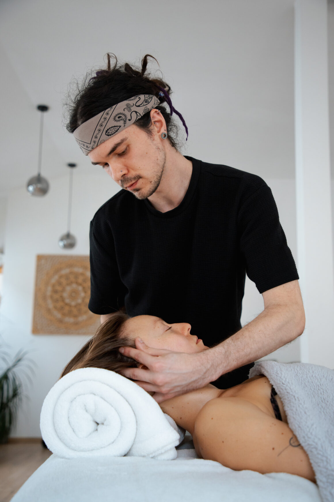

napätie v čeľusti, čele alebo okolí očí
Moja cesta
K práci s tvárou som sa dostal cez vlastnú cestu k sebavedomiu.
Tvár pre mňa nie je len estetika. Je to miesto, kde sa ukazuje stres, únava, napätie, emócie aj spôsob, akým sa človek nosí vo svete.
Olejník Face Work vzniká ako priestor, kde sa prirodzená starostlivosť stretáva s dotykom, disciplínou a jemným návratom k sebe.
Pozrieť moju premenu